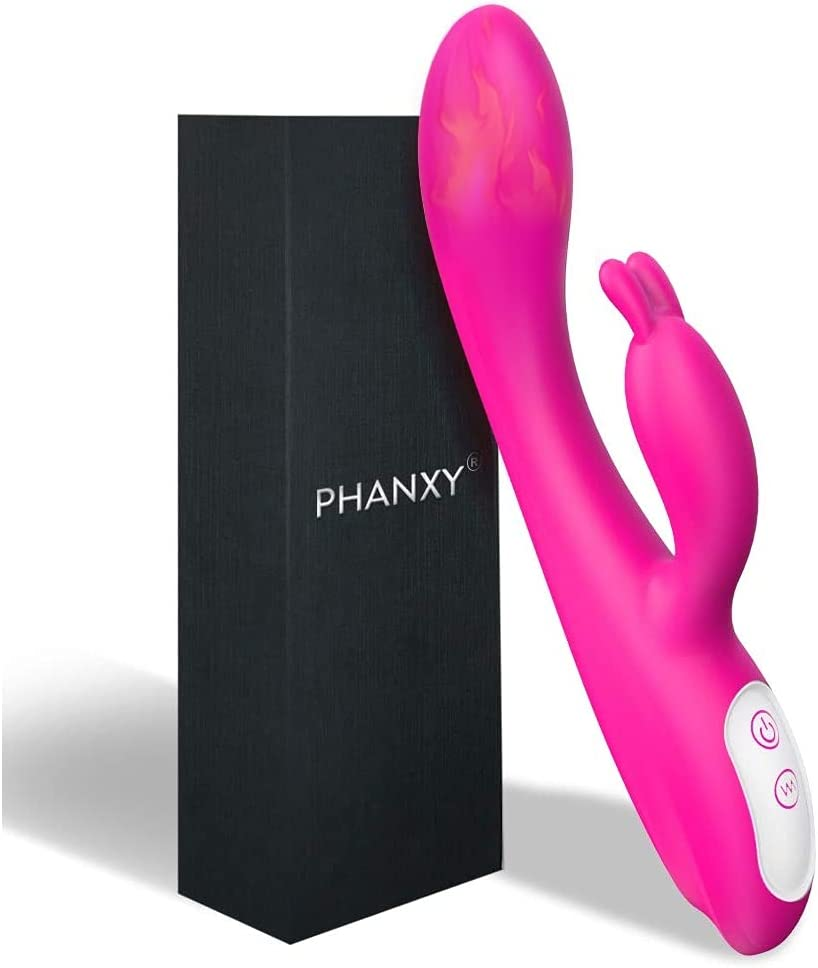
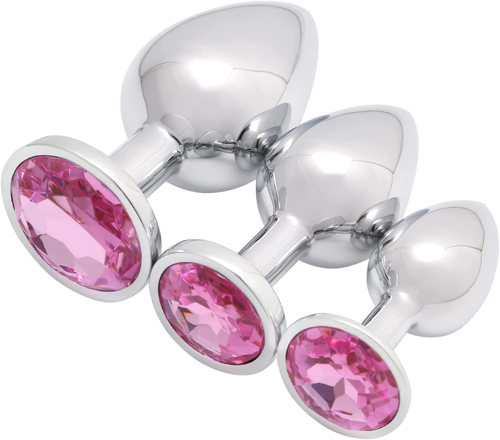
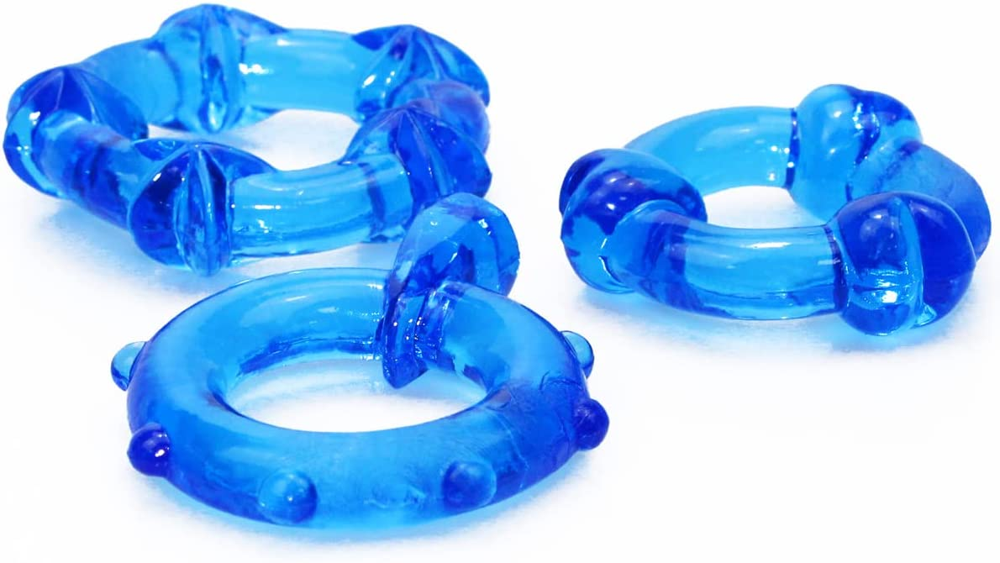
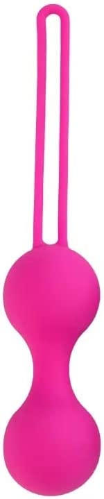

There are many benefits to giving a sex toy as a gift. Sex toys can enhance intimacy and pleasure in the bedroom, and can even be used to explore new fantasies and desires. They can also be a fun way to spice things up in a long-term relationship. When shopping for a sex toy, it's important to consider your girlfriend's preferences and comfort level. Is she more interested in internal or external stimulation? Does she prefer something more subtle or more intense? There are so many different options available, so it's important to do your research and find something that you both feel comfortable with. There are many different types of sex toys available on the market, and choosing the right one can be a daunting task. However, with a little research and understanding of your own preferences, you can find the perfect sex toy that will enhance your sexual pleasure and intimacy with your partner.
Here are some of the best sex toys to consider buying:
1. Vibrators: Vibrators are a classic sex toy that can be used for solo or partner play. They come in a variety of shapes, sizes, and materials, and can be used to stimulate the clitoris, vagina, or anus. Some popular types of vibrators include wand vibrators, rabbit vibrators, and bullet vibrators. We recommend the Luna Vibrator, amazon link given below:
Luna vibrator
2. Dildos: Dildos are phallic-shaped toys that can be used for penetration and stimulation of the vagina or anus. They come in a variety of sizes and materials, including silicone, glass, and metal. We recommend this rabbit dilo-vibrator hybrid, which is best selling on Amazon
Amazon link: https://amzn.to/3WkX0za3. Butt plugs: Butt plugs are anal toys designed to be inserted into the anus and left in place during sexual activity. They can help to prepare the anus for anal sex and can also be used for added pleasure during oral or vaginal sex. We recommend the Akstore 3 Pcs Luxury Jewelry on Amazon
Amazon-Link: https://amzn.to/3Vhv6D34. Anal beads: Anal beads are a string of beads that are inserted into the anus and then slowly removed during orgasm for an added sensation. They can be made of silicone, metal, or plastic, and come in a variety of sizes.We recommend this anal beads plug for maximum pleasure and comfort
Amazon-Link: https://amzn.to/3Q6hxp7
5. Cock rings: Cock rings are rings that are worn around the base of the penis or testicles to help maintain an erection and delay ejaculation. They can be made of silicone, rubber, or leather, and can also have vibrating features for added stimulation. We recommend the following:
Amazon-Link: https://amzn.to/3FTcvHD6. Kegel balls: Kegel balls, also known as Ben Wa balls, are small, weighted balls that are inserted into the vagina to help strengthen the pelvic floor muscles. This can improve sexual pleasure and also prevent incontinence.
Amazon-Link: https://amzn.to/3C1FmZ4It's important to keep in mind that not all sex toys are created equal, and it's important to choose a high-quality toy made from body-safe materials. Silicone, glass, and metal are all good options, and it's important to avoid toys made from jelly rubber or PVC, as they can contain harmful chemicals.
In conclusion, there are many different types of sex toys available, and the best one for you will depend on your personal preferences and desires. Whether you're looking for something to use solo or with a partner, there is a toy out there that will enhance your sexual pleasure and intimacy.